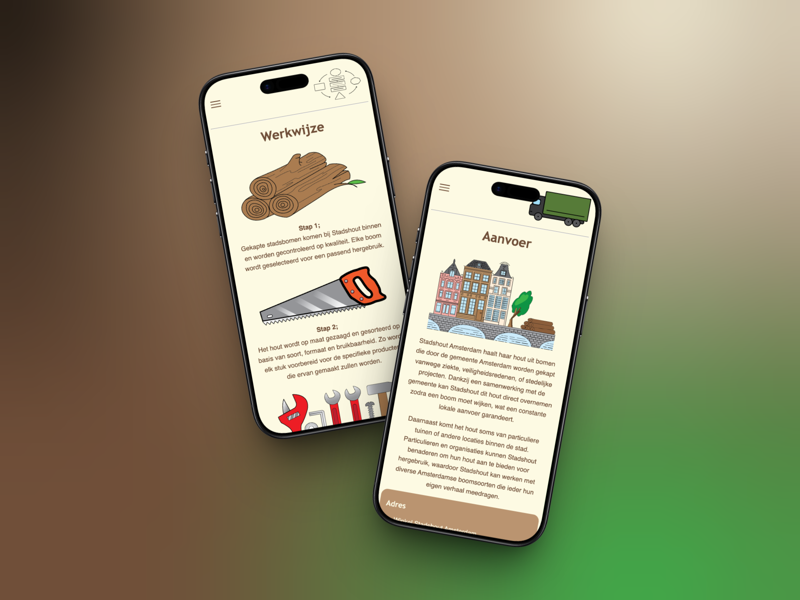
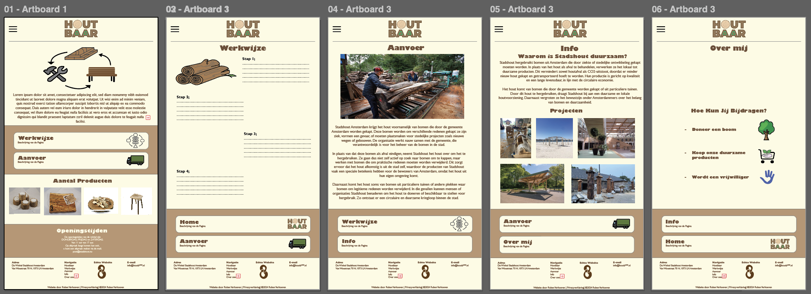
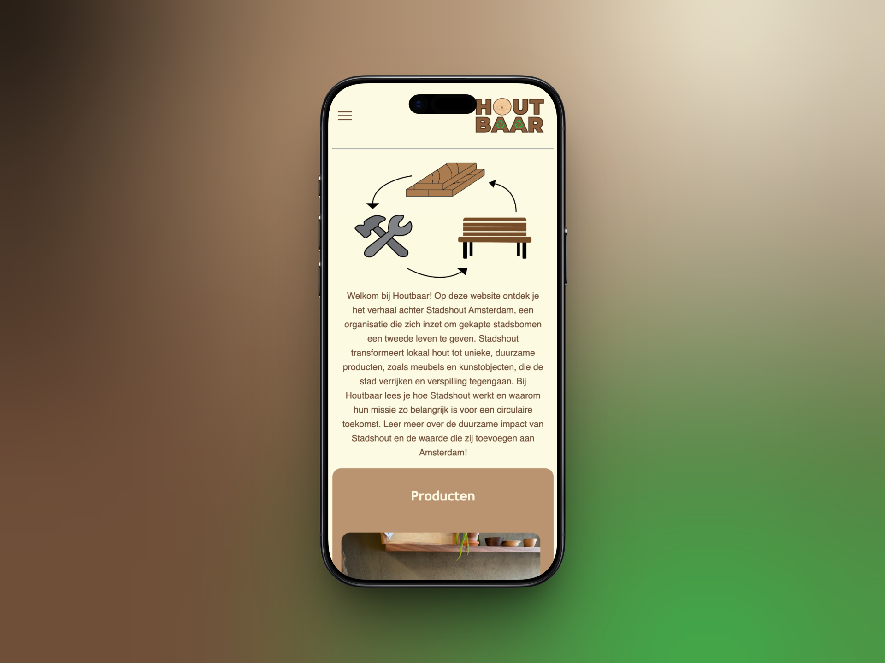
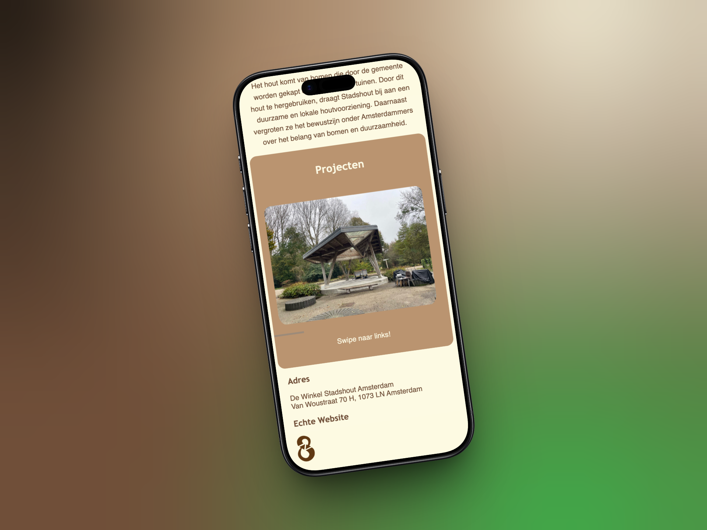

INDIVIDUAL PROJECT
Individual Project, Communication and Multimedia Design,
(Amsterdam University of Applied Sciences, 2024)
For this project I designed and built a complete website for Stadshout Amsterdam, an organisation that reuses trees that are cut down by the municipality. The goal was to present their story and mission in an accessible way.
This was my very first self-built website. All illustrations on the site I drew myself in Adobe Illustrator. Although the end result isn't perfect, I'm proud of it, it was the first time I took an idea all the way from design to a working website.
This website was only built for phone format and is not optimised for desktop!

PROJECT INFO
MY DESIGN PROCESS
For this project I made a lo-fi prototype in the form of a mobile wireflow with multiple pages: a homepage, working method, supply, info and about me page.
During coding I adjusted and developed the design further based on what I learned. The final result differs from the prototype in some places, but feels like a natural continuation of it.

MORE INFO
About Stadshout Amsterdam
Stadshout Amsterdam is an organisation that reuses trees cut down by the municipality or private individuals. Instead of treating the wood as waste, they process it into sustainable products, from furniture to building materials. This way they contribute to a circular and local economy within the city.
Illustrations
All illustrations on the website I made myself in Adobe Illustrator. From icons to decorative elements, everything was hand-drawn and tailored to the style and story of Stadshout.
Lo-fi prototype
Before I started coding I made a lo-fi prototype. In it I worked out the structure of the different pages: homepage, working method, supply, info and about me. During coding I deviated from the prototype in some places because I gained new insights and developed the design further.

RESULT


Let's build something together!
I'm currently open to internships, freelance projects and collaborations.
Let's get in touch!